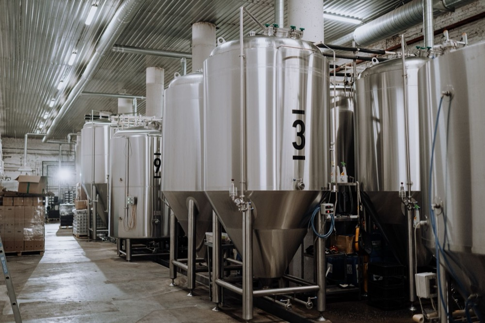

Food & Beverage
See what your water is carrying.
AquaMesh reads process and effluent water continuously, learns what your own product looks like, and connects a change back to what the line was doing at the time.

- Reads
- UV/Vis spectra, optional NIR, solids, turbidity, organic load
- Connects to
- SCADA, PLC, historian, LIMS, CIP and production records
- To start
- Existing data only — no new hardware
Capabilities
What AquaMesh can do in a food plant.
Capabilities, not a diagnosis. Which of them are worth anything at your site is what the audit is for.
Measure organic load continuously
A rugged in-situ probe reads the stream every few seconds, in place, through water that would foul a conventional analyser.
Learn your product’s own signature
A one-time model of your starch, sugar, dairy protein or sauce becomes the reference — so the system tracks deviation rather than trying to hold an absolute calibration across recipes and seasons.
Tie a change back to the line
The signal is correlated against feed rate, wash flow, machine state and cleaning records, so a rise points at a unit and a time rather than raising an alarm.
Put a number on it
Findings are priced against your own tariff and surcharge schedule, so a fix can be compared with everything else competing for the same hour.
Where it is typically applied
Common places to look in food and beverage.
General examples, not a prescription — the audit works out which of these are worth anything at your site.
- CIP return lineswhether a cycle has reached endpoint, or is still running on the clock
- Changeovers and flusheswhere product ends and water begins, transition by transition
- Effluent to sewerorganic load and solids ahead of the surcharge invoice, not after it
- Wash and recovery loopsproduct carried into overflow that could be recovered instead
- Separation and dewateringfines and product escaping into water streams
- Permit sampling pointscontinuous context around the samples you already take
What you actually get
A ranked list of things to do, each with a number on it.
Not a dashboard to interpret. Findings arrive with the action, the tags that are the evidence, and what the change is worth a year — to accept, resolve or dismiss.

Working together
Built for your plant, not from a preset.
- 1
Free audit
On your historian export. No hardware, no install — you see the ROI before you buy.
- 2
Your process, modelled
Your own product is the reference. We build the model from your data, not from a library.
- 3
Sensing where it pays
One or two probes where your existing instruments are blind — not a network.
- 4
You stay in control
Advisory by default, clamped to limits your engineers set, every approval logged.
Start with one stream.
Pick the one you have wondered about. We will look at what your existing data already says about it.
Capabilities described here are general. What any of them is worth at a given site depends on that site’s process, tariff and existing instrumentation.